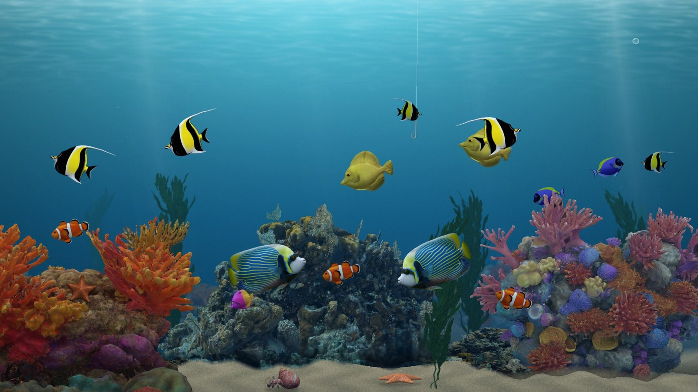
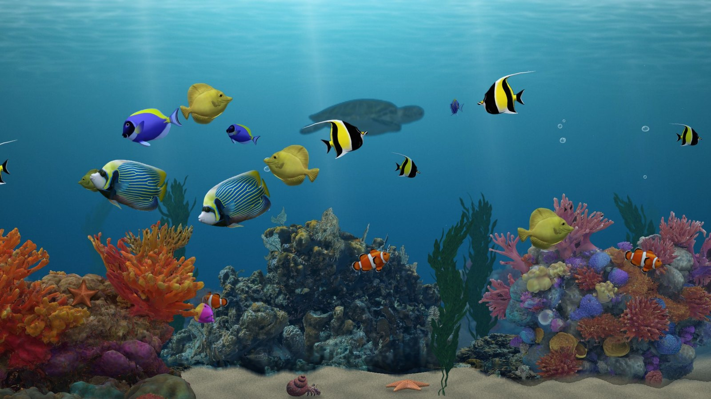
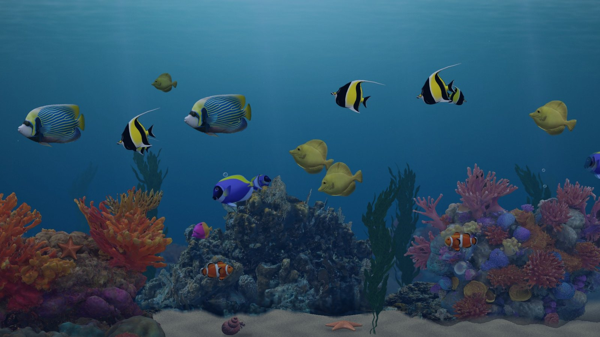

Reef Tank turns your TV into a peaceful saltwater reef. The scene is generated as it plays, so it never repeats: the fish choose their own paths, gather with their own kind, and settle around their home corals.
What you'll see
- Clownfish, yellow and powder blue tangs, Moorish idols, royal grammas and an emperor angelfish
- A hermit crab wandering the sand, and pulling into its shell when a fish swims too close
- Starfish, swaying seaweed and bubbles rising from the rock
- Now and then, a sea turtle drifting past in the distance, or a fishing hook that a curious fish swims over to inspect
- Sunlight shimmering down by day, turning to moonlight after dark with your Roku's clock

A curious fish checks out the hook
A sea turtle passing in the distance
The reef after dark
Use it as your screensaver
- Add Reef Tank from the Roku Streaming Store.
- On your Roku, go to Settings, then Theme, then Screensavers.
- Choose Reef Tank. To change its options, select Change screensaver settings.
Settings
Day and night (follow the clock, always day, or always night), the number of fish, and whether the sea turtle and fishing hook visit. Full credits are under About & credits. To open settings, go to Settings, then Theme, then Screensavers, select Reef Tank, and choose Change screensaver settings.
Credits
3D models by LasquetiSpice, Mikhail Nesterov (CGSoul), rubycinnamon, kenchoo, Brian Trepanier, VIVID REALITY, Ben Laret and assetfactory, used under Creative Commons Attribution 4.0 and Sketchfab licenses. Full credits, with links and the changes made, are in the app.